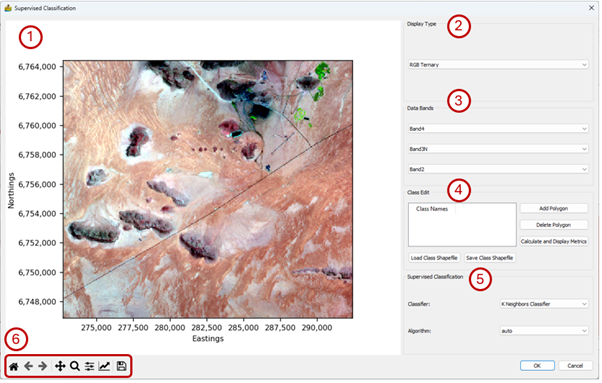

Supervised Classification¶
This module allows for the user to define classes and then classifies the data using the defined classes. The main interface consists of the following elements which will be discussed in more detail further below:
Map where the user draws in polygons outlining known features.
Display Type where the user can select how the data should be displayed.
Data Bands where the user selects the bands that will be displayed, depending on the selected Display Type.
Class Edit is where the user interacts with the map to define classes.
Supervised Classification allows the user to select the classification algorithm to use.
Standard image display settings that allow the user to zoom into specific areas of the image, move the zoomed in area around, return to the full image, save the image, etc.
The dropdown menu under Display Type gives the user three options of displaying the data in the map area, namely RGB Ternary, CMY Ternary and Single Colour Map. Based on the display type the user can select either three bands or one band to display under Data Bands.

The Class Edits consists of the following features:
Class Names – This is where the classes are listed. Once a class has been defined (by adding a polygon) its name can be changed by double-clicking on the class name. If a user wants to edit or delete a polygon, the polygon is selected by clicking on the class name.
Add Polygon – When the user clicks on this button, a generic class called “Class #” will appear under Class Name. Move the mouse pointer to the area of interest on the map and left-click to start adding the vertices of a polygon.
Delete Polygon – Click on this button to delete a polygon. First select the class you want to delete under Class Name by clicking on it. The polygon will now be highlighted in the map window. If you are sure this is the correct class, click on the Delete Polygon button.
Classification Metrics – This option calculates the confusion matrix, as well as accuracy and kappa scores. These can be saved to a Microsoft Excel spreadsheet.
Load Class Shapefile – Load a shapefile that was previously created.
Save Class Shapefile – Store a class shapefile. Because the shapefile format is used, the classes are compatible with standard GIS software

Four classifiers are available in the Supervised Classification section of the interface. These are:
K Neighbours Classifier with the following algorithm options:
auto – attempts to use most appropriate algorithm.
ball_tree – Ball tree algorithm
kd_tree – KD tree algorithm
brute – Use a brute force search.
Decision Tree Classifier with the following criterion options:
gini – use Gini impurity to measure the quality of a split.
entropy – uses Shannon information gain to measure the quality of a split.
Random Forest Classifier with the following criterion options:
gini – use Gini impurity to measure the quality of a split.
entropy – uses Shannon information gain to measure the quality of a split.
Support Vector Classifier with the following kernel options:
rbf – use Radial Basis Function kernel
linear – use linear kernel
poly – use polynomial kernel
The algorithms are from the scikit-learn library and detailed descriptions of all these parameters can be found at https://scikit-learn.org.